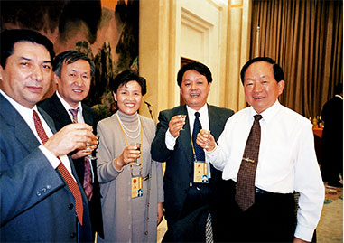
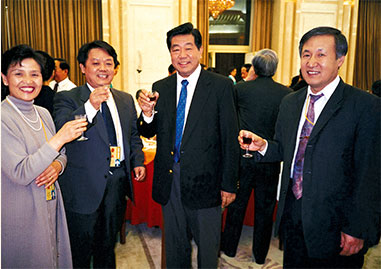
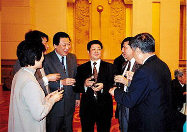
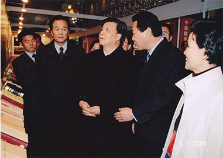
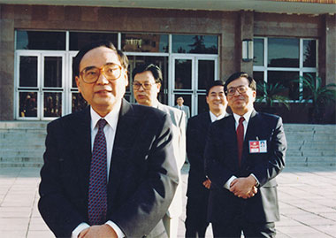
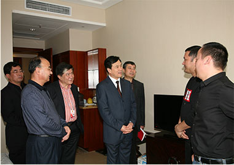
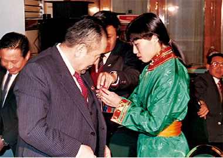
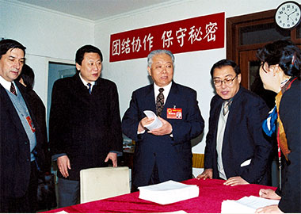

|  2002年3月全国人大常务委员会副委员长田纪云向圆满完成“两会”翻译任务的民族语文翻译组工作人员表示祝贺。 |  2003年3月，中共中央政治局常委、全国政协主席贾庆林向圆满完成两会翻译任务的民族语文翻译组工作人员表示祝贺 |
|  全国人大常委会副委员长王兆国向圆满完成十届全国人大、政协二次会议大会翻译任务的民族语文翻译组表示祝贺。 |  2004年，时任中共中央政治局委员、书记处书记、中宣部部长刘云山同志在中央机关有关部委领导同志的陪同下，来到中国翻译成就展民族语文翻译展区参观。 |
|  丁关根等中央领导接见党的十五大全体翻译工作人员 |  2012年全国“两会”期间，时任国家民委主任杨晶看望翻译局“两会”工作人员。 |
|  全国人大常务委员会副委员长布赫（左一）亲切接见参加全国人大、政协会议的民族语文翻译组的工作人员。 |  十届全国人大二次会议期间，全国人大常务委员会副委员长兼秘书长盛华仁（右三）等领导，亲临民族语文翻译组驻地视察工作。 |